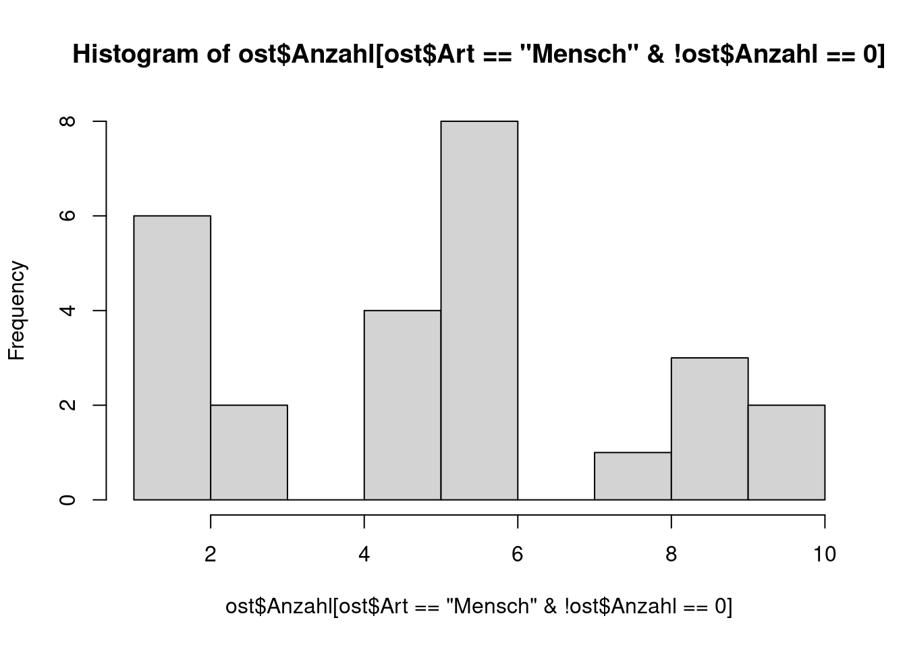
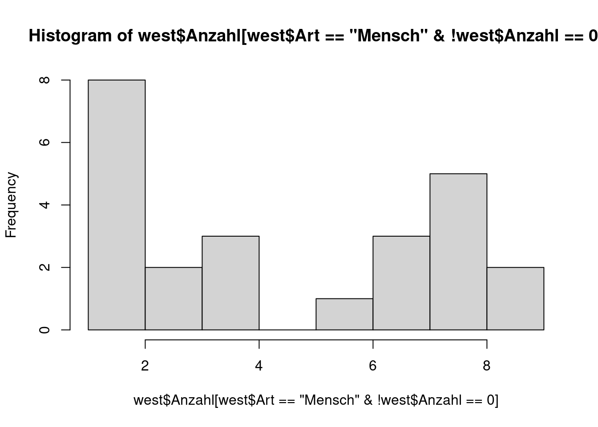
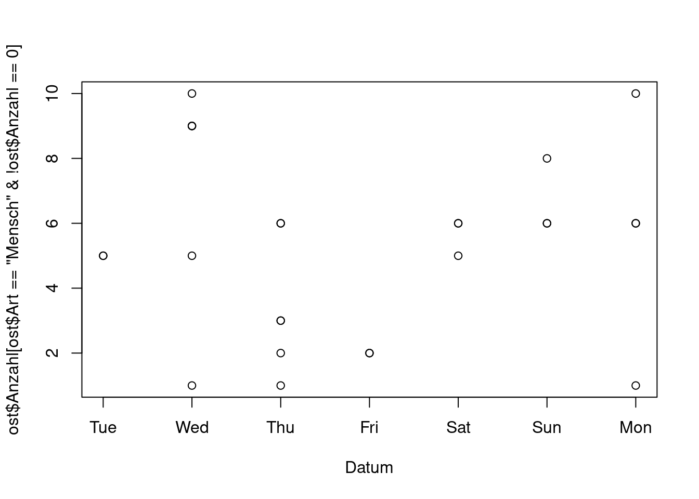
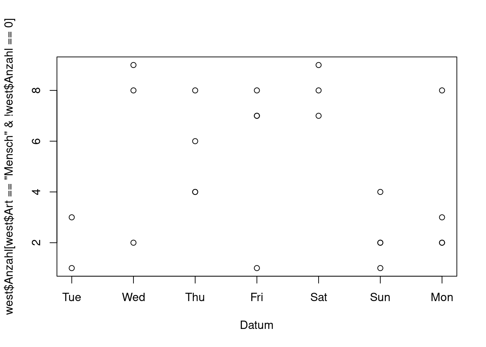
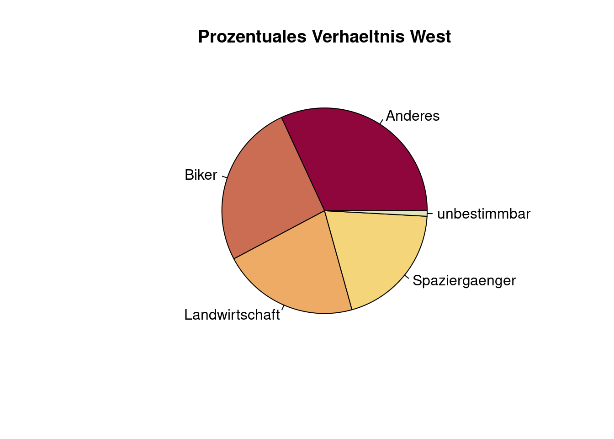
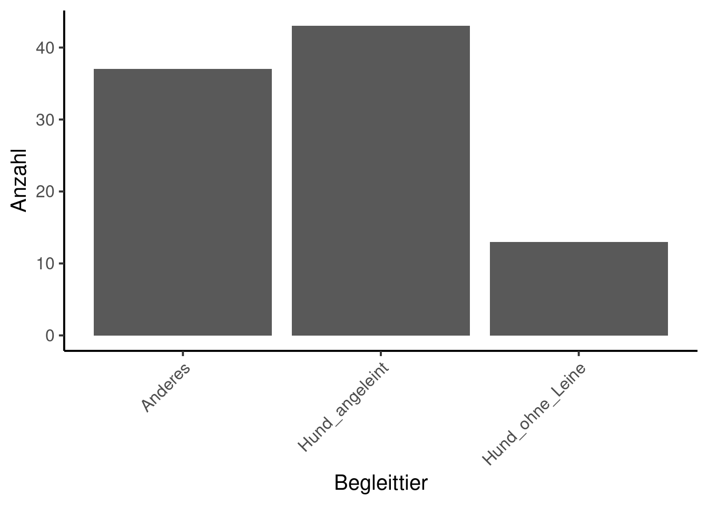
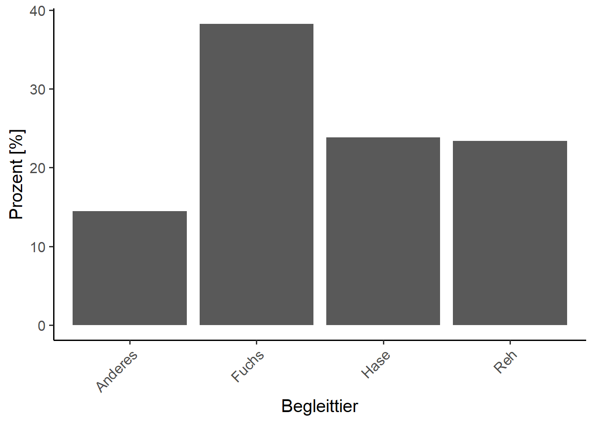

2: Felderhebung Lösung
#.###############################################################################################
# Besuchermonitoring Grüntal - Auswertung der Besucherzahlen ####
# Modul Research Methods, HS20. Adrian Hochreutener ####
#.################################################################################################
#.##############################################################################################
# METADATA UND DEFINITIONEN ####
#.################################################################################################
# Ordnerstruktur ####
# Im Ordner in dem das R-Projekt abgelegt ist muessen folgende Unterordner bestehen:
# - Skripts
# - Felderhebungen (Rohdaten hier ablegen)
# - Results
# Benoetigte Bibliotheken ####
library(tidyverse) # Data wrangling und piping
library(lubridate) # Arbeiten mit Datumsformaten
library(data.table)# schnelles Dateneinlesen
#.###############################################################################################
# 1. DATENIMPORT #####
#.###############################################################################################
# 1.1 Einlesen ####
# lese die Daten mithilfe von data.table ein. Je nach Bedarf muss der Speicherort sowie der
# Dateiname angepasst werden
cam <- fread(here("data","DummyData.csv"))#.###############################################################################################
# 2. VORBEREITUNG DER DATEN #####
#.###############################################################################################
# 2.1 erstes Sichten und anpassen der Datentypen ####
str(cam)Classes 'data.table' and 'data.frame': 100 obs. of 11 variables:
$ Person_Auswertung: chr "Bsp" "Bsp" "Bsp" "Bsp" ...
$ Kamerastandort : chr "ost" "ost" "ost" "ost" ...
$ ID_Foto : chr "bsp_001" "bsp_002" "bsp_003" "bsp_004" ...
$ Datum : chr "08.10.2020" "07.10.2020" "06.10.2020" "09.10.2020" ...
$ Stunde : int 3 0 16 24 17 23 14 7 5 23 ...
$ Art : chr "Mensch" "Wildtier" "Wildtier" "Wildtier" ...
$ Anzahl : int 3 4 1 6 7 10 2 6 9 6 ...
$ Richtung : chr "Bergauf" "Bergauf" "Bergauf" "Bergab" ...
$ Aktivitaet : chr "Spaziergaenger" "0" "0" "0" ...
$ Begleittier : chr "Hund_ohne_Leine" "0" "0" "0" ...
$ Wildtier : chr "0" "Hase" "Hase" "Hase" ...
- attr(*, ".internal.selfref")=<externalptr> head(cam) Person_Auswertung Kamerastandort ID_Foto Datum Stunde Art Anzahl
1: Bsp ost bsp_001 08.10.2020 3 Mensch 3
2: Bsp ost bsp_002 07.10.2020 0 Wildtier 4
3: Bsp ost bsp_003 06.10.2020 16 Wildtier 1
4: Bsp ost bsp_004 09.10.2020 24 Wildtier 6
5: Bsp ost bsp_005 07.10.2020 17 Wildtier 7
6: Bsp ost bsp_006 12.10.2020 23 Mensch 10
Richtung Aktivitaet Begleittier Wildtier
1: Bergauf Spaziergaenger Hund_ohne_Leine 0
2: Bergauf 0 0 Hase
3: Bergauf 0 0 Hase
4: Bergab 0 0 Hase
5: Bergauf 0 0 Fuchs
6: Bergauf Unbestimmbar Anderes 0cam <- cam %>%
mutate(Datum = as.Date(Datum, format = "%d.%m.%Y"))%>%
mutate(Kamerastandort = factor(Kamerastandort))%>%
mutate(Art = factor(Art))%>%
mutate(Richtung = factor(Richtung))%>%
mutate(Aktivität = factor(Aktivitaet))%>%
mutate(Begleittier = factor(Begleittier))%>%
mutate(Wildtier = factor(Wildtier))
# Datensatz trennen ####
# Kamera ost und West sind noch in einem Datensatz.
# Wir betrachten jeden Standort einzeln --> trennen aufgrund Name Standort
ost <- filter(cam, Kamerastandort == "ost")
west <- filter(cam, Kamerastandort == "west")
# 2.3 Verteilung pruefen ####
# mittels Histogram
# bei explorativen Analysen macht es immer Sinn sich die Verteilung der Daten anzuschauen
hist(ost$Anzahl[ost$Art=="Mensch" &# wir sind vorerst nur an den Menschen interessiert
!ost$Anzahl==0], # hier schliesse ich die Nuller aus der Visualisierung aus
breaks = 10) 
hist(west$Anzahl[west$Art=="Mensch" &
!west$Anzahl==0],
breaks = 10) 
# 2.4 mittels Scatterplot ####
plot(x=ost$Datum[ost$Art=="Mensch" &
!ost$Anzahl==0],
y=ost$Anzahl[ost$Art=="Mensch" &
!ost$Anzahl==0],
xlab = "Datum")
plot(x=west$Datum[west$Art=="Mensch" &
!west$Anzahl==0],
y=west$Anzahl[west$Art=="Mensch" &
!west$Anzahl==0],
xlab = "Datum")
# Filter ####
# fuer die weiteren Analysen schliessen wir die Wildtiere komplett aus
ost <- filter(ost, Art == "Mensch")
west <- filter(west, Art == "Mensch")
# Dennoch wolle wir auch wissen, welche Tiere auf dem Areal unterwegs sind
# Dafuer gibts einen separaten Datensatz
Tiere <- filter(cam, cam$Art == "Wildtier")#.##############################################################################################
# 3. ANALYSE #####
#.###############################################################################################
# Fuer die Analyse Eigenschaften Datensatz anschauen
summary(ost) Person_Auswertung Kamerastandort ID_Foto Datum
Length:26 ost :26 Length:26 Min. :2020-10-06
Class :character west: 0 Class :character 1st Qu.:2020-10-07
Mode :character Mode :character Median :2020-10-08
Mean :2020-10-08
3rd Qu.:2020-10-10
Max. :2020-10-12
Stunde Art Anzahl Richtung
Min. : 0.00 Mensch :26 Min. : 1.000 Bergab : 7
1st Qu.: 6.25 Wildtier: 0 1st Qu.: 3.000 Bergauf :15
Median :14.00 Median : 6.000 Unbestimmbar: 4
Mean :13.04 Mean : 5.308
3rd Qu.:20.75 3rd Qu.: 6.000
Max. :23.00 Max. :10.000
Aktivitaet Begleittier Wildtier Aktivität
Length:26 0 :8 0 :26 0 :0
Class :character Anderes :6 Anderes: 0 Anderes :8
Mode :character Hund_angeleint :9 Fuchs : 0 Biker :3
Hund_ohne_Leine:3 Hase : 0 Landwirtschaft:3
Reh : 0 Spaziergaenger:7
Unbestimmbar :5 summary(west) Person_Auswertung Kamerastandort ID_Foto Datum
Length:28 ost : 0 Length:28 Min. :2020-10-06
Class :character west:28 Class :character 1st Qu.:2020-10-07
Mode :character Mode :character Median :2020-10-09
Mean :2020-10-09
3rd Qu.:2020-10-11
Max. :2020-10-12
Stunde Art Anzahl Richtung
Min. : 1.00 Mensch :28 Min. :0.000 Bergab :11
1st Qu.: 6.75 Wildtier: 0 1st Qu.:1.750 Bergauf : 8
Median :11.00 Median :3.500 Unbestimmbar: 9
Mean :12.07 Mean :4.143
3rd Qu.:16.75 3rd Qu.:7.250
Max. :24.00 Max. :9.000
Aktivitaet Begleittier Wildtier Aktivität
Length:28 0 :5 0 :28 0 :0
Class :character Anderes :8 Anderes: 0 Anderes :5
Mode :character Hund_angeleint :8 Fuchs : 0 Biker :8
Hund_ohne_Leine:7 Hase : 0 Landwirtschaft:2
Reh : 0 Spaziergaenger:5
Unbestimmbar :8 # Anzahl Total / standort ####
Anzahl_Ost <- sum(ost$Anzahl)
Anzahl_West <- sum(west$Anzahl)
# Meiste Aktivitaet ####
Akt_ost <- ost %>%
group_by(Aktivität)%>% # Hier sagen wir nach was wir gruppieren
summarise (n = sum(Anzahl)) %>% # und dann sagen wir, dass R zusammenfassen soll und zwar die Anzahl
mutate(freq = n / sum(n))%>% # und dann soll und R das prozentuale Verhaeltniss berechnen
arrange(desc(n)) # und dann das ganze absteigend sortieren
# das ganze wiederholen wir fuer den zweiten Standort
# Jetzt kommt die grosse Staerke von R.
# Wir haben den Code zur Berechnung der Anzahl pro Gruppe bereits geschrieben.
# fuer die folgenden Auswertungen koennen wir ihn einfach "recyceln"
Akt_west<- west %>%
group_by(Aktivität)%>%
summarise (n = sum(Anzahl)) %>%
mutate(freq = n / sum(n))%>%
arrange(desc(n))
Aktivitaet_West <- west %>%
group_by(Aktivität)%>%
summarise (n = sum(Anzahl)) %>%
mutate(freq = n / sum(n))%>%
arrange(desc(n))
# Begleittier
Begleit_ost <- ost %>%
group_by(Begleittier)%>%
summarise (n = sum(Anzahl)) %>%
mutate(freq = n / sum(n))%>%
arrange(desc(n))
# uns interessiert es nicht, wie viele Leute kein Begleittier dabei hatten
Begleit_ost <- filter(Begleit_ost, !Begleittier == "0")
Begleit_west <- west %>%
group_by(Begleittier)%>%
summarise (n = sum(Anzahl)) %>%
mutate(freq = n / sum(n))%>%
arrange(desc(n))
Begleit_west <- filter(Begleit_west, !Begleittier == "0")
# Wildtier
Wildtier <- Tiere %>%
group_by(Wildtier)%>%
summarise (n = sum(Anzahl)) %>%
mutate(freq = n / sum(n))%>%
arrange(desc(n))#.###############################################################################################
# 4. VISUALISIERUNG #####
#.###############################################################################################
# Verteilung der Aktivitaeten als Pie Chart ####
# Zuerst eine Palette mit 5 Farben definieren
pal <- hcl.colors(5, palette = "heat")
# Dann als Kreisdiagramm plotten
pie(Akt_west$n, labels = c("Anderes", "Biker", "Landwirtschaft", "Spaziergaenger", "unbestimmbar"),
main = "Prozentuales Verhaeltnis West",
col = pal) 
# Begleittier als Bar Chart ####
ggplot(Begleit_ost, # hier den Datensatz spezifizieren
mapping=aes(x=Begleittier, y = n))+ # Absolute Anzahl darstellen
geom_col(width=0.9,position = "dodge")+# hier sage ich, dass ich ein Balkendiagramm will
labs(x="Begleittier", y= "Anzahl")+ # Achsenbeschriftung setzen
theme_classic(base_size = 15)+ # Und zu guter letzt: Stil definieren
theme(axis.text.x = element_text(angle = 45, vjust = 1, hjust=1)) # sowie Achsenbeschr.ausrichten
# Wildtier als Bar Chart ####
ggplot(Wildtier, mapping=aes(x=Wildtier, y=freq*100))+ # kann auch prozentual dargestellt werden
geom_col(width=0.9,position = "dodge")+
labs(x="Begleittier", y= "Prozent [%]")+
theme_classic(base_size = 15)+
theme(axis.text.x = element_text(angle = 45, vjust = 1, hjust=1))
# Bei Bedraf koennen die selben Plots fuer den zweiten Standort gemacht werden.